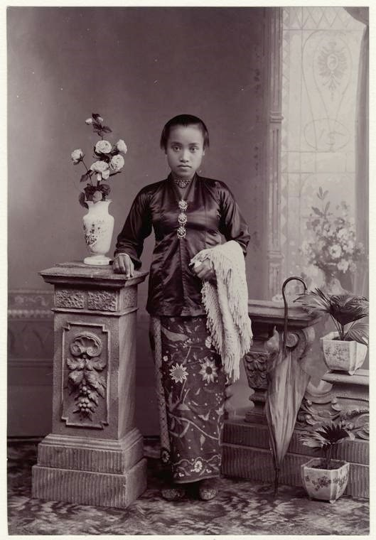
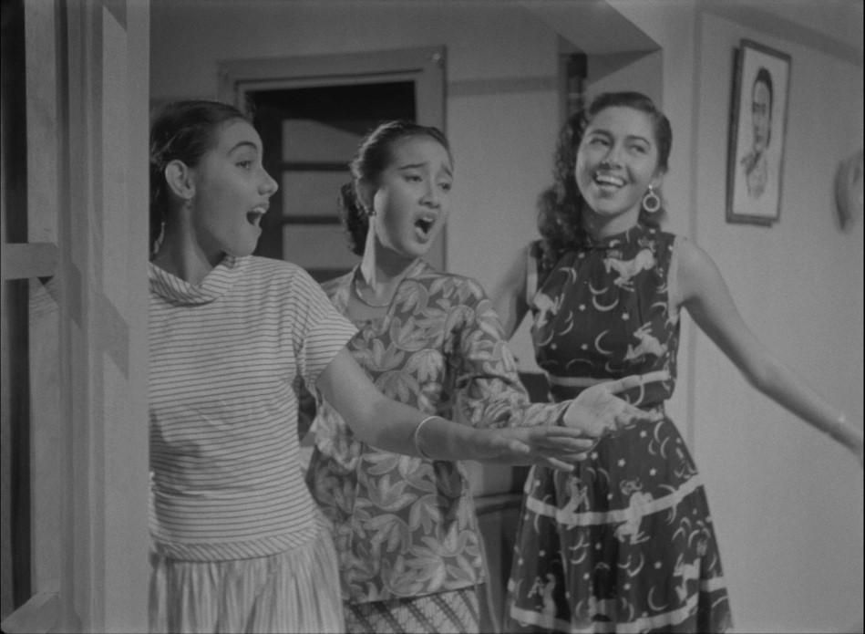

Rupa adalah suatu hal yang abstrak; berubah dalam maknanya ketika dibicarakan. Rupa berarti bentuk yang dapat kita rasakan dan telaah; tidak hanya dilihat, namun juga dapat disentuh, didengar, dan juga memiliki rasa taktil ketika dikenakan. Ini adalah sebuah rekonstruksi rupa, untuk mengingatkan manusia modern terhadap peradaban yang hidup sebelum keselarasan itu berubah menjadi solidaritas yang kabur seiring dengan terjadinya perkembangan zaman. Tempo berubah; tapi apakah rupa ingatan juga harus ikut berubah?

Pajang.1 Kala

Pajang.2 Kala Pajang.3 Kala
* ETIMOLOGI // IKET *
Rupa adalah suatu hal yang abstrak; berubah dalam maknanya ketika dibicarakan. Rupa berarti bentuk yang dapat kita rasakan dan telaah; tidak hanya dilihat, namun juga dapat disentuh, didengar, dan juga memiliki rasa taktil ketika dikenakan. Ini adalah sebuah rekonstruksi rupa, untuk mengingatkan manusia modern terhadap peradaban yang hidup sebelum keselarasan itu berubah menjadi solidaritas yang kabur seiring dengan terjadinya perkembangan zaman. Tempo berubah; tapi apakah rupa ingatan juga harus ikut berubah?
* ETIMOLOGI // UDHENG *
Rupa adalah suatu hal yang abstrak; berubah dalam maknanya ketika dibicarakan. Rupa berarti bentuk yang dapat kita rasakan dan telaah; tidak hanya dilihat, namun juga dapat disentuh, didengar, dan juga memiliki rasa taktil ketika dikenakan. Ini adalah sebuah rekonstruksi rupa, untuk mengingatkan manusia modern terhadap peradaban yang hidup sebelum keselarasan itu berubah menjadi solidaritas yang kabur seiring dengan terjadinya perkembangan zaman. Tempo berubah; tapi apakah rupa ingatan juga harus ikut berubah?
* ETIMOLOGI // RASUKAN *
Rupa adalah suatu hal yang abstrak; berubah dalam maknanya ketika dibicarakan. Rupa berarti bentuk yang dapat kita rasakan dan telaah; tidak hanya dilihat, namun juga dapat disentuh, didengar, dan juga memiliki rasa taktil ketika dikenakan. Ini adalah sebuah rekonstruksi rupa, untuk mengingatkan manusia modern terhadap peradaban yang hidup sebelum keselarasan itu berubah menjadi solidaritas yang kabur seiring dengan terjadinya perkembangan zaman. Tempo berubah; tapi apakah rupa ingatan juga harus ikut berubah?
* ETIMOLOGI // BENIK *
Rupa adalah suatu hal yang abstrak; berubah dalam maknanya ketika dibicarakan. Rupa berarti bentuk yang dapat kita rasakan dan telaah; tidak hanya dilihat, namun juga dapat disentuh, didengar, dan juga memiliki rasa taktil ketika dikenakan. Ini adalah sebuah rekonstruksi rupa, untuk mengingatkan manusia modern terhadap peradaban yang hidup sebelum keselarasan itu berubah menjadi solidaritas yang kabur seiring dengan terjadinya perkembangan zaman. Tempo berubah; tapi apakah rupa ingatan juga harus ikut berubah?
* ETIMOLOGI // SA-BUK *
Rupa adalah suatu hal yang abstrak; berubah dalam maknanya ketika dibicarakan. Rupa berarti bentuk yang dapat kita rasakan dan telaah; tidak hanya dilihat, namun juga dapat disentuh, didengar, dan juga memiliki rasa taktil ketika dikenakan. Ini adalah sebuah rekonstruksi rupa, untuk mengingatkan manusia modern terhadap peradaban yang hidup sebelum keselarasan itu berubah menjadi solidaritas yang kabur seiring dengan terjadinya perkembangan zaman. Tempo berubah; tapi apakah rupa ingatan juga harus ikut berubah?
* ETIMOLOGI // TIMANG *
Rupa adalah suatu hal yang abstrak; berubah dalam maknanya ketika dibicarakan. Rupa berarti bentuk yang dapat kita rasakan dan telaah; tidak hanya dilihat, namun juga dapat disentuh, didengar, dan juga memiliki rasa taktil ketika dikenakan. Ini adalah sebuah rekonstruksi rupa, untuk mengingatkan manusia modern terhadap peradaban yang hidup sebelum keselarasan itu berubah menjadi solidaritas yang kabur seiring dengan terjadinya perkembangan zaman. Tempo berubah; tapi apakah rupa ingatan juga harus ikut berubah?
* ETIMOLOGI // JARIK *
Rupa adalah suatu hal yang abstrak; berubah dalam maknanya ketika dibicarakan. Rupa berarti bentuk yang dapat kita rasakan dan telaah; tidak hanya dilihat, namun juga dapat disentuh, didengar, dan juga memiliki rasa taktil ketika dikenakan. Ini adalah sebuah rekonstruksi rupa, untuk mengingatkan manusia modern terhadap peradaban yang hidup sebelum keselarasan itu berubah menjadi solidaritas yang kabur seiring dengan terjadinya perkembangan zaman. Tempo berubah; tapi apakah rupa ingatan juga harus ikut berubah?
* ETIMOLOGI // WIRU *
Rupa adalah suatu hal yang abstrak; berubah dalam maknanya ketika dibicarakan. Rupa berarti bentuk yang dapat kita rasakan dan telaah; tidak hanya dilihat, namun juga dapat disentuh, didengar, dan juga memiliki rasa taktil ketika dikenakan. Ini adalah sebuah rekonstruksi rupa, untuk mengingatkan manusia modern terhadap peradaban yang hidup sebelum keselarasan itu berubah menjadi solidaritas yang kabur seiring dengan terjadinya perkembangan zaman. Tempo berubah; tapi apakah rupa ingatan juga harus ikut berubah?
* ETIMOLOGI // CANELA *
Rupa adalah suatu hal yang abstrak; berubah dalam maknanya ketika dibicarakan. Rupa berarti bentuk yang dapat kita rasakan dan telaah; tidak hanya dilihat, namun juga dapat disentuh, didengar, dan juga memiliki rasa taktil ketika dikenakan. Ini adalah sebuah rekonstruksi rupa, untuk mengingatkan manusia modern terhadap peradaban yang hidup sebelum keselarasan itu berubah menjadi solidaritas yang kabur seiring dengan terjadinya perkembangan zaman. Tempo berubah; tapi apakah rupa ingatan juga harus ikut berubah?
* ETIMOLOGI // CURIGA & WARANGKA *
Rupa adalah suatu hal yang abstrak; berubah dalam maknanya ketika dibicarakan. Rupa berarti bentuk yang dapat kita rasakan dan telaah; tidak hanya dilihat, namun juga dapat disentuh, didengar, dan juga memiliki rasa taktil ketika dikenakan. Ini adalah sebuah rekonstruksi rupa, untuk mengingatkan manusia modern terhadap peradaban yang hidup sebelum keselarasan itu berubah menjadi solidaritas yang kabur seiring dengan terjadinya perkembangan zaman. Tempo berubah; tapi apakah rupa ingatan juga harus ikut berubah?